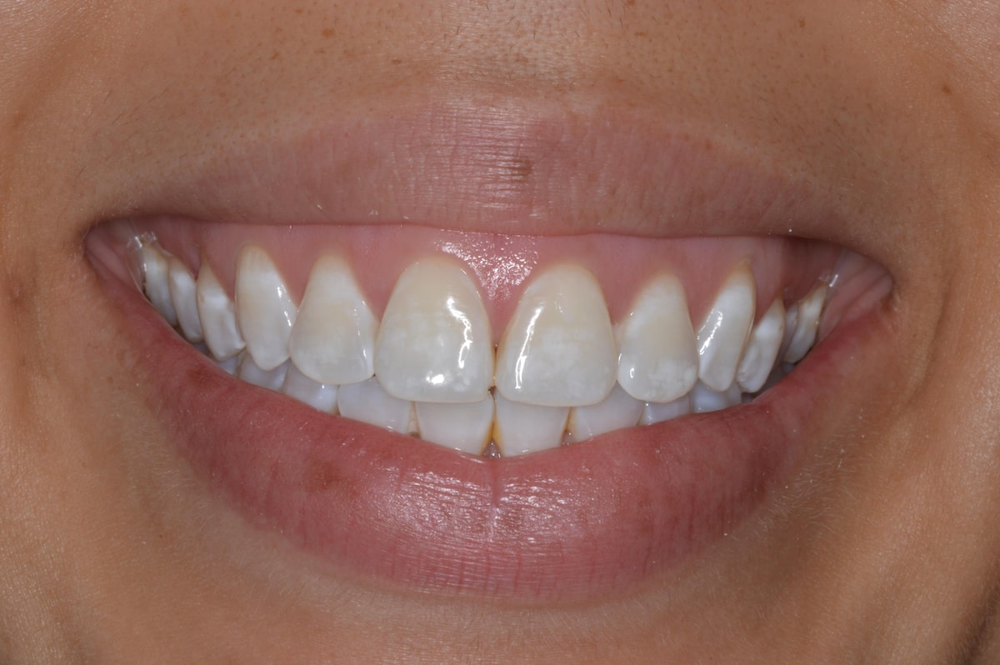

Teeth develop white spots for several reasons, some more serious than others. A lot of times we wonder if they’re a cosmetic issue that will go away, or if they’re indicators of a bigger health issue. A lot of times white spots are a loss of mineral content in the enamel. This loss of mineral content is the result of a buildup of acidity in the plaque on our teeth. Acidity comes from the foods and drinks we consume but is also a byproduct of the bacteria in our mouth, which creates more acid when we consume carbohydrates. Another common cause of a white spot is trauma to the tooth during development.
Besides being a cosmetic concern for many people, these white spots can actually result in the deterioration of teeth. In fact, the first evidence of tooth decay is a white spot lesion, meaning that the tooth’s enamel has been compromised, leaving an opaque, chalky white spot.
White spot lesions are a permanent change in the structure of your tooth and thus are not removable. Your dentist’s ability to reduce the appearance of white spots depends on several factors, such as:
When you see signs of white spots, it is important to visit your dentist as quickly as you are able in order to prevent additional problems, like cavities, from occurring further down the line. If your situation is one that is easily corrected, one of the easiest treatments is micro-abrasion.
In the case that your white spots are the result of something more serious or you have a high quantity of white spots, your dentist may recommend capping the teeth, using a white filling or applying a veneer. If you are experiencing white spots or would like tips on preventing white spot lesions while wearing braces, my team is happy to assist you in finding the right solution. Request an appointment below for more information.